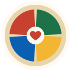

Cardápio acessível
Leitura em áudio, apoio em Libras, contraste, texto ampliado e navegação simples.

EssênciaPizzaria inclusivaCaraguatatuba · São Paulo
O Essência nasceu para unir famílias à mesa com mais previsibilidade, autonomia e acolhimento.
Proposta para Caraguatatuba: delivery e retirada de quinta a domingo, das 18h às 23h.
95% de quem respondeu à nossa pesquisa acha que a inclusão melhora a experiência de todos (19 de 20 respostas, out/2026)
De onde veio a ideia
Percebemos que sair para comer ainda pode ser uma experiência difícil para pessoas com deficiência, autismo, TDAH, seletividade alimentar, disfagia e outras necessidades sensoriais.
Ingredientes pouco claros, ambientes intensos e barreiras de comunicação podem transformar um momento em família em preocupação. A nossa ideia nasceu da vontade de mudar essa experiência desde o primeiro contato com o cardápio.
Não queremos criar um cantinho adaptado. Queremos que a família inteira possa comer junta, com dignidade.
Como a empresa funciona
Para nós, inclusão não é apenas um símbolo ou uma rampa. É informação, ambiente, atendimento e liberdade para escolher.
Leitura em áudio, apoio em Libras, contraste, texto ampliado e navegação simples.
Ingredientes visíveis, personalização do preparo e espaço para observações.
Proposta de ambiente acolhedor, organizado e com menos sobrecarga de estímulos.
Equipe preparada para escutar necessidades sem pressa, julgamento ou constrangimento.
Do início ao pedido
Como a empresa nasceu
Escolhemos “Essência” porque a proposta começa na pessoa: em suas preferências, seu ritmo e sua forma de se comunicar.
Nossa marca é uma pizza de verdade, com uma fatia sendo servida à mesa e um pepperoni em forma de coração. Ao lado do nome, a palavra “pizza” aparece escrita em Braille, cada letra em uma cor da acessibilidade, e o texto usa a fonte Atkinson Hyperlegible, criada para pessoas com baixa visão. As cores não são enfeite: todas passam no nível AA da WCAG, a norma internacional de contraste, para que ninguém precise forçar a vista para ler um preço ou um aviso de alérgeno.
Segurança alimentar na prática
É o cuidado que a cozinha segue em cada pedido com alergia ou restrição.
Normas: a cozinha segue as boas práticas para serviços de alimentação da Anvisa (RDC 216/2004) e da Vigilância Sanitária de São Paulo (Portaria CVS 3/2026).
Ver os ingredientes, as quantidades e os alérgenos de cada sabor
A mesma tabela de alérgenos aparece no catálogo do WhatsApp Business e no Instagram.
Perguntas das famílias
Respostas curtas para as dúvidas mais comuns.
Na proposta da cozinha, os utensílios são separados por cor, há uma bancada só para pedidos com restrição e cada pedido segue um checklist de restrições. Antes de fechar a caixa, uma segunda pessoa confere o pedido. Mesmo assim, retirar um ingrediente não elimina o risco de contato cruzado: escreva a alergia na observação do pedido.
Pelo WhatsApp, pelo iFood ou com retirada no balcão, com horário marcado e sem fila. No cardápio do site você vê cada ingrediente, a quantidade e os alérgenos antes de escolher.
De quinta a domingo, das 18h às 23h. A massa é preparada à tarde.
Na caixa de papelão kraft com etiqueta em Braille, pictograma, os alérgenos do pedido e um lacre de papel na frente, que mostra se a caixa foi aberta depois da conferência na cozinha.
Sim. Ele tem leitura em áudio, tradutor de Libras (VLibras), texto maior, alto contraste e modo foco, e você pode montar a pizza do zero, ingrediente por ingrediente.
No começo, não: é delivery e retirada, mais a Noite Essência, um encontro por mês com som baixo e luz indireta em um espaço parceiro. Depois, a loja vai ter área tranquila, área pet, banheiros acessíveis, piso tátil e estacionamento.
Experimente o protótipo
Veja todos os sabores, monte sua própria pizza do zero, altere ingredientes, escolha o ponto da massa, escreva observações e teste os recursos de acessibilidade.
Ver o cardápio de demonstração Esta é uma demonstração acadêmica da experiência digital da Essência Pizzaria.